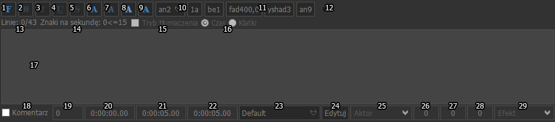
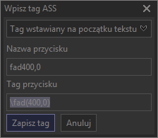
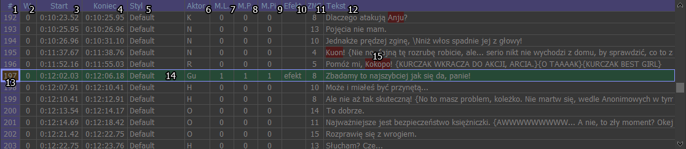
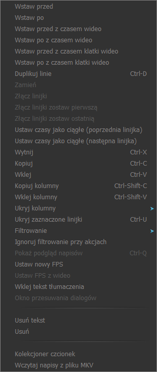

Edycja napisów
Edycja napisów
Edycja napisów odbywa się w polu edycji linii, gdzie można zmienić tekst, czas, itd i polu napisów, gdzie można dodawać, usuwać linie.

Wyjaśnienie funkcji poszczególnych kontrolek.
- Wyświetla okno wyboru czcionki, w którym można zmienić: czcionkę, wielkość, pogrubienie, kursywę, przekreślenie i podkreślenie.
- Wstawia tag pogrubienia w tekst (\b1) bądź usuwa pogrubienie, gdy w stylach bądź wcześniejszym tekście jest ustawione (\b0).
- Wstawia tag kursywy w tekst (\i1) bądź usuwa kursywę, gdy w stylach bądź wcześniejszym tekście jest ustawiona (\i0).
- Wstawia tag podkreślenia w tekst (\u1) bądź usuwa podkreślenie, gdy w stylach bądź wcześniejszym tekście jest ustawione (\u0).
- Wstawia tag przekreślenia w tekst (\s1) bądź usuwa przekreślenie, gdy w stylach bądź wcześniejszym tekście jest ustawiona (\s0).
- Wyświetla okno wyboru kolorów, pozwala na zmianę koloru podstawowego czyli kolor czcionki. Po wciśnięciu ok wstawia tag (\1c) z wybranym kolorem.
- Wyświetla okno wyboru kolorów, pozwala na zmianę koloru pomocniczego czyli koloru używany przy karaoke zanim zostanie jeszcze "odśpiewane". Po wciśnięciu ok wstawia tag (\2c) z wybranym kolorem.
- Wyświetla okno wyboru kolorów, pozwala na zmianę koloru obwódki. Po wciśnięciu ok wstawia tag (\3c) z wybranym kolorem.
- Wyświetla okno wyboru kolorów, pozwala na zmianę koloru cienia. Po wciśnięciu ok wstawia tag (\4c) z wybranym kolorem.
- Wstawia na początek tekstu pozycję dla danej linijki tag (\an).
- Przyciski wstawiania tagów. Po kliknięciu prawym przyciskiem myszy można ustawić tag, nazwę przycisku, a także czy to ma być tag wstawiany w miejsce kursora, na początku tekstu czy też ma być traktowany jako zwykły tekst. Okno ustawiania tagu wygląda następująco:

Tag należy wstawić z ukośnikiem i bez nawiasów klamrowych. Po zapisaniu tagu naciśnięcie na przycisk wstawia tag wg wybranych opcji. Można też wstawiać ten sam tag we wielu liniach jednocześnie.
- Opcje przycisków wstawiania tagów służą do ustawienia ilości przycisków tagów i konfiguracji każdego z nich.
- Licznik ilości linii i ilości znaków w linii, zmienia kolor na czerwono, gdy jest więcej niż dwie linie, bądź jest więcej niż 43 znaki w którejś z nich.
- Znaki na sekundę czyli ile znaków trzeba przeczytać w jedną sekundę. Zmienia kolor na czerwony gdy ilość znaków na sekundę jest większe od 15.
- Pozwala na włączenie / wyłączenie trybu tłumaczenia (opcja aktywna tylko przy wczytanych napisach w formacie ASS).
- Pozwala na przełączenie wyświetlania z czasów na klatki.
- Pole edycji tekstu.
- Oznaczenie linii jako komentarz, który nie jest wyświetlany na wideo.
- Warstwa linijki, w przypadku wielu linijek gdy jedna jest na drugiej, najbardziej są widoczne linie z najwyższą warstwą, bądź znajdujące się niżej napisach. Dodatkowo wielkość warstw można zmieniać, klikając w pole i przewijając rolką, bądź klikając prawym przyciskiem i przesuwając w górę(+1) - dół(-1) lub lewo(+10) - prawo(-10).
- Pole czasu początkowego, (godziny), (minuty), (sekundy), (setne sekundy) w przypadku formatu ASS, w przypadku SRT na końcu są milisekundy, w przypadku MDVD wyświetlane są klatki, MPL2 czas w dziesiątych sekundy, a w przypadku TMP (godziny), (minuty),(sekundy). Czas można zmieniać używają klawiatury bądź myszką podobnie jak w przypadku warstw, tyle że w przypadku ASS, SRT i TMP możemy zmieniać godziny, minuty, sekundy osobno.
- Pole czasu końcowego, działa podobnie jak w przypadku czasu początkowego.
- Pole czasu trwania linijki, czyli czas końcowy minus czas początkowy.
- Edycja stylu linii, szybki dostęp z pominięciem menedżera stylów.
- Lista wyboru stylów zawiera tylko style i zawarte w napisach ASS (aby inny styl pojawił się na liście należy go dodać w Menedżerze stylów) .
- Pole aktor, zwykle wpisuje się tu nazwę postaci (osoby która wypowiada daną kwestię).
- Lewy margines pozwala na ustawienie niezależnego marginesu od tego, który istnieje w stylach.
- Prawy margines pozwala na ustawienie niezależnego marginesu od tego, który istnieje w stylach.
- Pionowy (górny i dolny) margines pozwala na ustawienie niezależnego marginesu od tego, który istnieje w stylach.
- Pole efekt pozwala na umieszczenie dodatkowych efektów ASS (jest ich kilka, ale niestety strona GTW, na której były opisane padła). Zwykle w tym polu umieszcza się oznaczenia czy też dodatkowe funkcje używane przy automatyzacji.
Dodatkowymi opcjami tego pola jest wstawianie różnicy początkowej i końcowej przydatne przy timinogowaniu \fad bądź \t. Wystarczy ustawić wideo w miejscu, gdzie ma się zaczynać bądź kończyć \fad lub \t i wcisnąć skrót "prawy alt + ," dla różnicy początkowej i "prawy alt + ." dla różnicy końcowej (skróty te można sobie dowolnie przypisać w opcjach w oknie skrótów klawiszowych.
Pole napisów

Kolumny, które są zawsze, chyba że zostaną ukryte przy pomocy funkcji ukryj kolumny albo zostanie otwarty inny format niż ASS, który ich nie posiada.
- Numer linii. Tło niebieskie to nieedytowane linie, tło żółte linie po edycji, tło jasnozielone, linie po edycji które zostały zapisane. W zależności od motywu kolory te mogą się różnić
- Warstwa linijki.
- Czas początkowy linijki.
- Czas końcowy linijki. Dwukrotne (jednokrotne, gdy ustawione jest to w opcjach) kliknięcie na nim ustawia wideo w jego pozycji. To pole nie pojawia się w przypadku napisów w formacie TMP.
- Styl linii, w przypadku, gdy jego tło jest czerwone dany styl nie istnieje i należy go utworzyć, w przeciwnym wypadku odtwarzacz wideo korzystający z VSfiltra będzie pokazywał komunikaty.
- Pole aktor.
- Lewy margines przyjmuje wartość od 0 do 9999.
- Prawy margines przyjmuje wartość od 0 do 9999.
- Pionowy margines przyjmuje wartość od 0 do 9999.
- Pole Efekt.
- Znaki na sekundę, po przekroczeniu 15 znaków na sekundę tło zostaje oznaczone na czerwono.
- Tekst linijki.
- Znacznik potrzebny w przypadku przesuwania czasu linijki do czasu wideo. Domyślnie przemieszcza się on razem z aktywną linijką. By go ustawić na innej linijce należy kliknąć prawym przyciskiem myszy na kolumnie numeracji linijki. Jest to przydatne używając funkcji czasy wyższe bądź równe lub czasy niższe bądź równe bądź zaznaczone linijki i przesunąć do wideo / audio czas innej linii niż aktywna (więcej informacji można znaleźć w temacie Przesuwanie czasów napisów i post processor) .
- Aktywna linijka, której elementy można edytować w polu edycji.
- Błąd pisowni pokazywany bezpośrednio w polu napisów ułatwia ich lokalizację.
Kolumny, które są widoczne tylko, gdy jakakolwiek linia ma zmienioną domyślną wartość i wszystkie dotyczą tylko formatu ASS.
Wszystkie kolumny można ukryć na stałe, używając funkcji ukryj kolumny.
- Warstwa linijki (opis w polu edycji linii).
- Aktor (opis w polu edycji linii).
- Lewy margines (opis w polu edycji linii).
- Prawy margines (opis w polu edycji linii).
- Pionowy margines (opis w polu edycji linii).
- Efekt (opis w polu edycji linii).
Po wklejeniu tekstu tłumaczenia (patrz menu) do innych napisów pojawia się jeszcze dodatkowa kolumna z tym tekstem umożliwiająca synchronizację go z timingiem.

Wstaw przed - wkleja pustą linię, przed aktualną linijkę (zaczytana jest w polu edycji). Czas początkowy linii jest taki jak czas końcowy linii poprzedniej.
Wstaw po - wkleja pustą linię, po aktualnej linijce (zaczytana jest w polu edycji). Czas początkowy linii jest taki jak czas końcowy linii poprzedniej.
Wstaw przed z czasem wideo - działa podobnie jak wstaw przed, tylko ustawia aktualny czas wideo.
Wstaw po z czasem wideo - działa podobnie jak wstaw po, tylko ustawia aktualny czas wideo.
Wstaw przed z czasem klatki wideo - działa podobnie jak wstaw przed z czasem wideo, tylko ustawia czas końcowy, by obejmował widoczną na wideo klatkę.
Wstaw po z czasem klatki wideo - działa podobnie jak wstaw po z czasem wideo, tylko ustawia czas końcowy, by obejmował widoczną na wideo klatkę.
Duplikuj - Duplikuje zaznaczone linijki i wstawia je po zaznaczeniu.
Zamień - zamienia dwie zaznaczone linijki ze sobą. Zamieniać też można przytrzymując Alt i przeciągając linie w dół bądź w górę myszą.
Złącz linijki - złącza zaznaczone linijki w jedną, ustawiając jej czas startowy pierwszej i końcowy ostatniej, tekst jest podzielony znakami podziału "\N".
Złącz linijki zostaw pierwszą - podobnie jak w złącz linijki tylko pozostawia tekst pierwszej linijki, tekst pozostałych przepada.
Złącz linijki zostaw ostatnią - podobnie jak w złącz linijki tylko pozostawia tekst ostatniej linijki, tekst pozostałych przepada.
Ustaw czasy jako ciągłe (poprzednia linijka) - Ustawia czas początkowy aktywnej linijki na taki sam jak końcowy poprzedniej linii, tak by napisy pojawiały się jeden po drugim.
Ustaw czasy jako ciągłe (następna linijka) - Ustawia czas końcowy aktywnej linijki na taki sam jak początkowy następnej linii, tak by napisy pojawiały się jeden po drugim.
Wytnij - wycina zaznaczone linijki i wkleja do schowka.
Kopiuj - kopiuje zaznaczone linijki do schowka.
Wklej - wkleja wcześniej skopiowane linijki przed aktualną linijkę.
Kopiuj kolumny - kopiuje wybrane kolumny (np tekst, czas początkowy i końcowy itd) z wcześniej zaznaczonych linijek do zaznaczonych linijek.
Wklej kolumny - wkleja wybrane kolumny (np tekst, czas początkowy i końcowy itd) z wcześniej skopiowanych linijek do zaznaczonych linijek.
Ukryj kolumny - permanentnie ukrywa kolumny nawet gdy są w nich jakieś zmiany.
Ukryj zaznaczone linijki - pełny opis patrz filtrowanie.
Filtrowanie - pełny opis patrz filtrowanie.
Ignoruj filtrowanie przy akcjach - pełny opis patrz filtrowanie.
Pokaż podgląd napisów - pełny opis patrz podgląd napisów.
Ustaw nowy FPS - jest dobre w przypadku gdy znamy aktualny FPS napisów, co pozwala nam łatwo go zmienić.
Ustaw FPS z wideo - pozwala na zmianę FPSu, gdy nie znamy FPSu napisów. Przesuwamy czas napisów by pasował dobrze z jedną linijką, niekoniecznie pierwszą, jeśli jest to anime to najlepiej niech to będzie pierwsza linia po openingu. Po czym kilkadziesiąt linijek dalej (w przypadku anime po przerywniku reklamowym też mogą wystąpić przesunięcia, więc lepiej nie wybierać tu ostatniej linijki) zaznaczamy drugą linijkę i ustawiamy wideo w miejscu, gdzie ma być jej wypowiedź, wybieramy tę opcję i gotowe. Jednakże w przypadku zmiennego FPSu nawet to może nie być pomocne chociaż chociaż kwestie będą bardziej zbliżone, no chyba że to był timing pod format RMVB, któremu FPS spada nawet poniżej 15 klatek, gdy jest jakaś większa akcja.
Wklej tekst tłumaczenia - pozwala na przenoszenie tekstu jednych napisów do timingu drugich (przykładowo mamy polskie napisy w TMP i angielskie w ASS, oczywiście musimy wtedy znać na tyle angielski by je zsynchronizować)
Okno przesuwania dialogów - uaktywnia się gdy został wklejony tekst tłumaczenia, pozwala na synchronizację wklejonego tekstu z timingiem, w osobnym temacie opiszę jak działają poszczególne przyciski tego okna.
Usuń tekst - usuwa tekst zaznaczonych linijek, w sumie to już archaiczna opcja do niczego nie potrzebna.
Usuń - usuwa zaznaczone linijki.
Kolekcjoner czcionek - Pozwala na sprawdzenie dostępności czcionek i zapisanie ich na dysku.
Wczytaj napisy w pliku MKV - funkcja dodana dla wygody, by drugi raz nie wybierać tego samego pliku MKV, gdy już go wczytaliśmy jako wideo.
Created with the Personal Edition of HelpNDoc: Produce electronic books easily